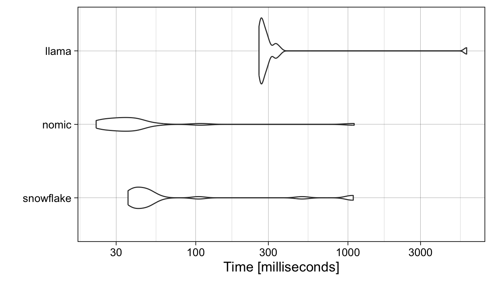
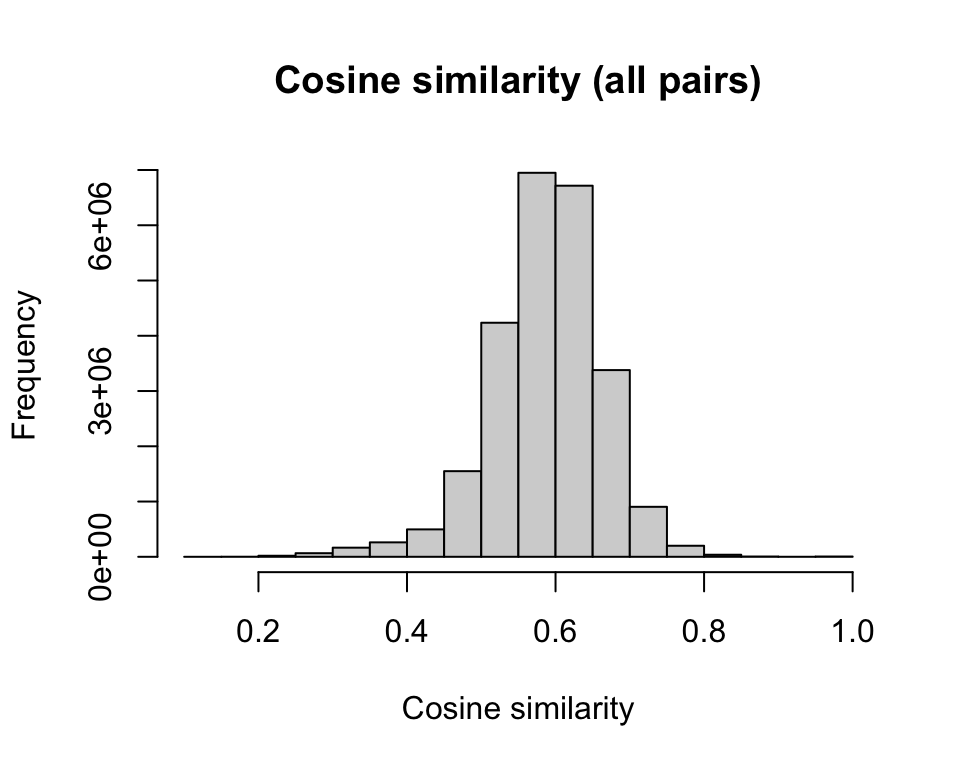
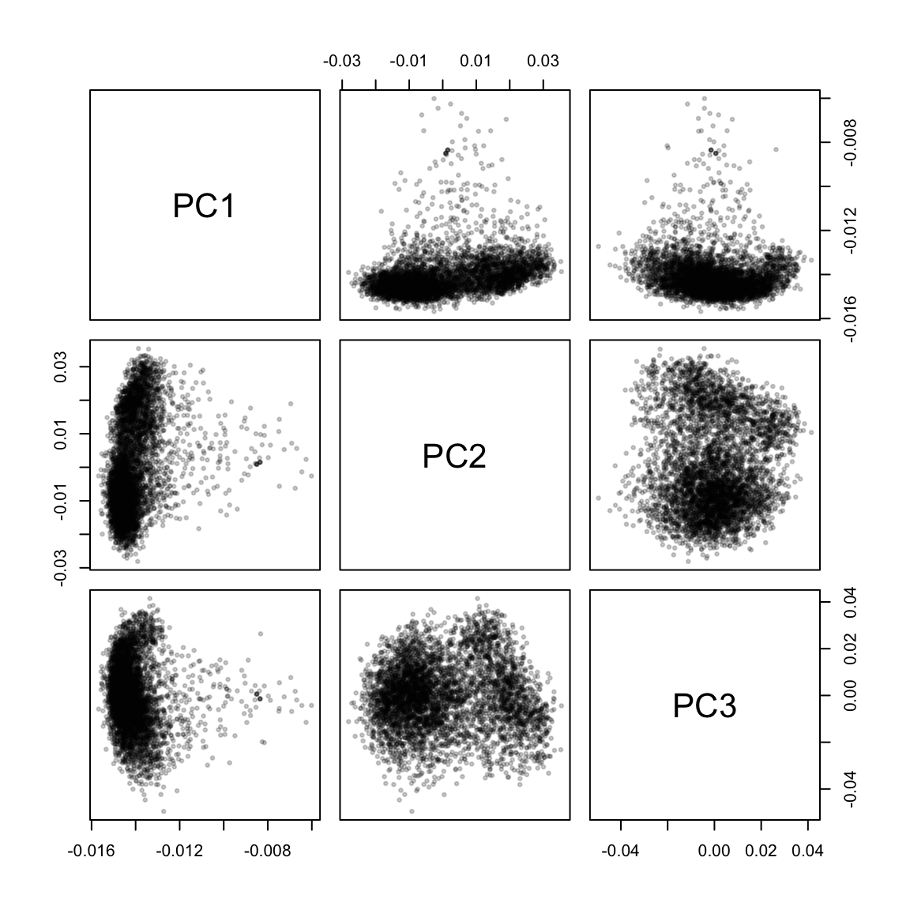
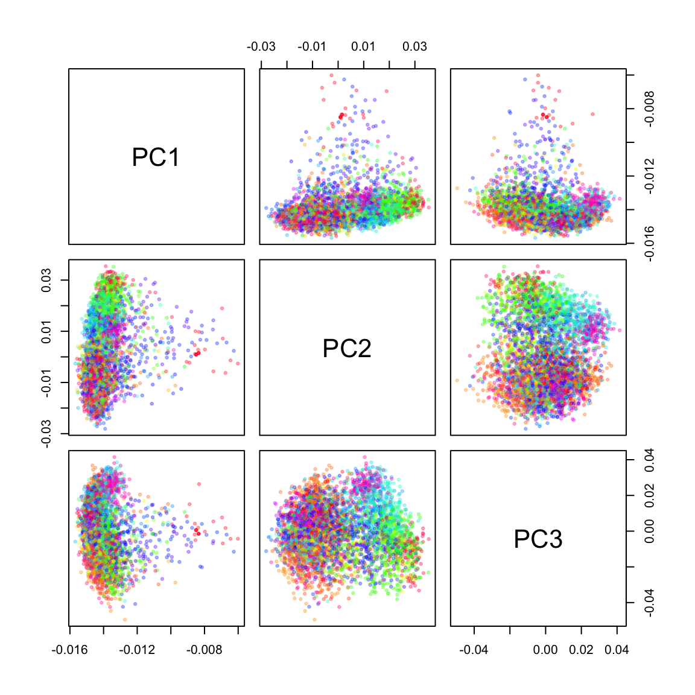
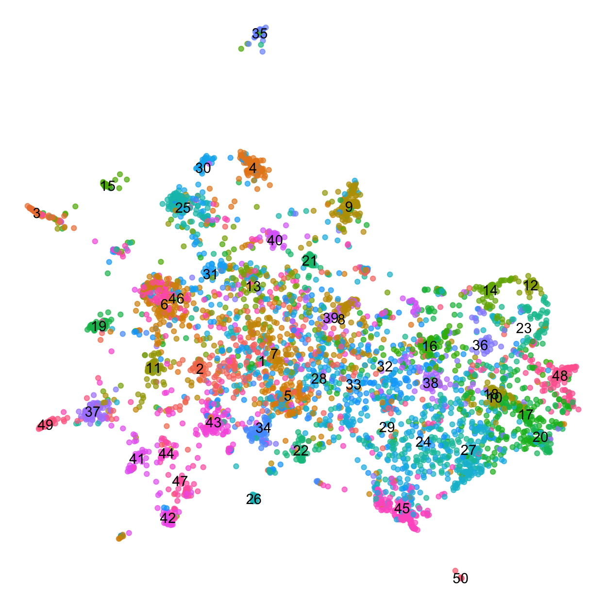

library(dplyr)
library(httr2)
ollama_embed <- function(input = "This text will be embedded.",
model = "nomic-embed-text:latest") {
resp <- httr2::request("http://localhost:11434") |>
httr2::req_url_path("/api/embed") |>
httr2::req_headers("Content-Type" = "application/json") |>
httr2::req_body_json(
list(
model = model,
input = input,
truncate = TRUE,
stream = FALSE,
keep_alive = "10s",
options = list(seed = 123)
)
) |>
httr2::req_perform()
m <- resp |> httr2::resp_body_json(simplifyVector = TRUE) |>
getElement("embeddings")
m[1, ]
}
ollama_generate <- function(prompt = "Who is Super Mario's best friend?",
model = "llama3.1:latest") {
resp <- httr2::request("http://localhost:11434") |>
httr2::req_url_path("/api/generate") |>
httr2::req_headers("Content-Type" = "application/json") |>
httr2::req_body_json(
list(
model = model,
prompt = prompt,
stream = FALSE,
keep_alive = "10s", # keep the model in memory for 10s after the call
options = list(seed = 123) # reproducible seed
)
) |>
httr2::req_perform()
resp |> httr2::resp_body_json() |>
getElement("response")
}tl;dr
Today I learned about
- Running LLMs locally via Ollama
- Creating embeddings for a corpus of recipes
- Exploring the embedding space using PCA, clustering and UMAP
Acknowledgements
This post is heavily inspired by @hrbrmstr‘s DuckDB VSS & CISA KEV post, and benefited greatly from Joseph Martinez’ tutorial on Semantic Search using Datasette. As always, all errors are mine.
Introduction
Large language models (LLMs) are everywhere right now, from chat bots to search engines. Today, inspired by Bob Rudis’ recent post on exploring a large set of “Known Exploited Vulnerabilities by creating and searching text embeddings, I am using local LLM to explore a large set of food recipes by
- Embedding each recipe (title, ingredients & instructions) into a high dimensional space using the
nomic-embed-textLLM running locally via Ollama. - Exploring the embedding space using principal components (PCs) and Uniform Manifold Approximation and Projection for Dimension Reduction (UMAP)
- Cluster recipes and summarize each cluster with the (smallest version of) Meta’s
llama3.1model.
Installing Ollama
For this post, I am using LLMs that run locally on my M2 Macbook Pro with 16Gb RAM. (Some larger LLMs require more memory, so I will stick to the smaller models here.)
First, I downloaded and installed the Ollama application, which makes it easy to retrieve and run different models. Once Ollama is running (indicated by the llama 🦙 menu item in my Mac’s main menu bar), it serves REST endpoints, including calls to
- generate text based on a prompt:
POST /api/generate - return the numerical embedding for an input:
POST /api/embed
all from the comfort of my own laptop.
Downloading models
Next, let’s download a few models, including some that only provide embeddings (e.g. they output numerical vectors representing the input) and the latest llama 3.1 model released by Meta1 via ollama’s command line interface:
ollama pull nomic-embed-text # embeddings only
ollama pull nomic-embed-text # embeddings only
ollama pull llama3.1:latest # 8 billion parametersInteracting with Ollama from R
Following Bob’s example we can submit queries to our Ollama server by issuing POST requests via the httr2 package. Because we will do this many times, the following helper R functions will be useful - one to retrieve embeddings, the other to generate text.
Ollama offers many different models to choose from, differing in architecture, number of parameters, and of course the training data they were built from. Typically, larger models take longer to run and require more memory. For example, the following benchmark profiles the turnaround time for our three models, averaged over 20 requests:
suppressPackageStartupMessages({
library(ggplot2)
library(microbenchmark)
})
set.seed(123)
# the beginning of Shakespeare's Sonnet 18
test_input <- paste("Shall I compare thee to a summer's day?",
"Thou art more lovely and more temperate:",
"Rough winds do shake the darling buds of May,",
"And summer's lease hath all too short a date:")
microbenchmark(
snowflake = ollama_embed(model = "snowflake-arctic-embed:latest",
input = test_input),
nomic = ollama_embed(model = "nomic-embed-text:latest",
input = test_input),
llama = ollama_embed(model = "llama3.1:latest",
input = test_input),
times = 20, unit = "ms"
) |>
ggplot2::autoplot() +
theme_linedraw(14)
The nomic-embed-text (v1.5) model with 22 million parameters is (usually) faster than snowflake-arctic-embed:latest model with 335 million parameters, and both are faster than the llama3.1 model with 8 billion.
Because it is fast and supports long inputs, and I will stick with the nomic-embed-text:latest model here. Speed of course doesn’t reflect the quality of the embeddings. If you are curious how the choice of model influences the results, just swap out the model argument in the calls to the ollama_embed helper function below.
{ollamar} R package
The ollamar R package offers convenience functions to interact with the ollama application.
For example, we can use them to prompt a model of our choice and extract its response from the returned object 2.
library(ollamar)
ollamar::test_connection()
resp <- ollamar::generate("llama3.1", "tell me a 5-word story")
ollamar::resp_process(resp, "df")$responseThe embeddings function directs requests to the embed endpoint instead 3.
emb <- ollamar::embeddings("llama3.1", "Hello, how are you?")
length(emb)The recipe corpus
Kaggle hosts the Food Ingredients and Recipes Dataset with Images dataset, which was originally scraped from the Epicurious Website. The original dataset includes images for each recipe as well, but Joseph Martinez has generously shared a CSV file with just the text information in this github repository.
Let’s read the full dataset into our R session:
library(readr)
recipes <- readr::read_csv(
paste0("https://raw.githubusercontent.com/josephrmartinez/recipe-dataset/",
"main/13k-recipes.csv"),
col_types = "_c_ccc")
recipes# A tibble: 13,501 × 4
Title Instructions Image_Name Cleaned_Ingredients
<chr> <chr> <chr> <chr>
1 Miso-Butter Roast Chicken With A… "Pat chicke… miso-butt… "['1 (3½–4-lb.) wh…
2 Crispy Salt and Pepper Potatoes "Preheat ov… crispy-sa… "['2 large egg whi…
3 Thanksgiving Mac and Cheese "Place a ra… thanksgiv… "['1 cup evaporate…
4 Italian Sausage and Bread Stuffi… "Preheat ov… italian-s… "['1 (¾- to 1-poun…
5 Newton's Law "Stir toget… newtons-l… "['1 teaspoon dark…
6 Warm Comfort "Place 2 ch… warm-comf… "['2 chamomile tea…
7 Apples and Oranges "Add 3 oz. … apples-an… "['3 oz. Grand Mar…
8 Turmeric Hot Toddy "For the tu… turmeric-… "['¼ cup granulate…
9 Instant Pot Lamb Haleem "Combine da… instant-p… "['¾ cup assorted …
10 Spiced Lentil and Caramelized On… "Place an o… spiced-le… "['1 (14.5-ounce) …
# ℹ 13,491 more rowsThis corpus is very large. For this example, I sample 5000 random recipes to speed up the calculation of the embeddings (see below).
set.seed(123)
keep <- sample(seq.int(nrow(recipes)), size = 5000, replace = FALSE)
recipes <- recipes[keep, ]The list of ingredients is included as a python list, including square brackets and quotes. Let’s use the reticulate R package to coerce it into a character vector and then collapse it into a single comma-separated string:
suppressPackageStartupMessages({
library(purrr)
library(reticulate)
library(stringr)
})
recipes$Cleaned_Ingredients <- reticulate::py_eval(
# combine ingredients from all recipes into a single string to avoid
# looping over each one separately
paste("[", recipes$Cleaned_Ingredients, "]", collapse = ", ")) |>
unlist(recursive = FALSE) |>
purrr::map_chr(~ stringr::str_flatten_comma(.)) |>
# double quotes, denoting inches, were escaped in the original list
stringr::str_replace_all(pattern = stringr::fixed('\"'),
replacement = ' inch')Some Titles contain escaped quotes, let’s remove them.
recipes$Title <- stringr::str_replace_all(
string = recipes$Title,
pattern = stringr::fixed('\"'), replacement = "")I also replace all newlines (or tabs) in the Instructions with spaces:
recipes$Instructions <- stringr::str_replace_all(
string = recipes$Instructions,
pattern = stringr::regex("[[:space:]]"), replacement = " ")Generating embeddings
Now I am ready to pass each recipe to the nomic-embed-text v1.5 model via Ollama’s embed endpoint, which returns a numerical vector for our query.
We pass each recipe to the LLM one by one, combining the Title, Ingredients and Instructions of each recipe into a single string. (Now is an excellent time to grab a cup of coffee ☕️ - on my M2 Macbook Pro it takes about a minute to calculate 1000 embeddings.)
To keep things organized, I add the embeddings to the original data.frame, as the Embedding list column.
library(tictoc)
tic("Calculating embeddings")
recipes$Embedding <- lapply(
glue::glue_data(
recipes,
paste(
"{Title}",
"Ingredients: {Cleaned_Ingredients}",
"Instructions: {Instructions}"
)
), \(x) {
ollama_embed(
input = x,
model = "nomic-embed-text:latest"
)
})
toc()Calculating embeddings: 367.923 sec elapsedSometimes I encounter recipes where the embeddings are all zero, so I remove those from the data.frame.
if (any(sapply(recipes$Embedding, var) > 0)) {
recipes <- recipes[sapply(recipes$Embedding, var) > 0,]
}Exploring the recipes in the embedding space
We now have a representation of each recipe in the high-dimensional embedding space. How high dimensional? Let’s check:
length(recipes$Embedding[[1]])[1] 768To explore the relationship between the recipes in this space, we combine the embeddings into a matrix with one column per recipe, and one row for each element of the embedding vector.
m <- do.call(cbind, recipes$Embedding)
colnames(m) <- recipes$Title
dim(m)[1] 768 4999Exploring the embedding matrix
Cosine similarity
To compare pairs of recipes to each other, we can calculate a distance metric, e.g. Euclidean distance or Cosine similarity between their embedding vectors.
library(coop) # Fast Covariance, Correlation, and Cosine Similarity Operations
similarity_cosine <- cosine(m)The cosine similarity for most pairs of recipes clusters around 0.6, but there are some that are much more or much less similar to each other
hist(as.vector(similarity_cosine), main = "Cosine similarity (all pairs)",
xlab = "Cosine similarity")
For example, let’s retrieve the titles of the recipes that are most similar to Marbleized Eggs or Spinach Salad with Dates. Reassuringly the best matches sound very similar:
sort(similarity_cosine["Marbleized Eggs", ], decreasing = TRUE) |>
head() Marbleized Eggs To Dye Easter Eggs
1.0000000 0.8432208
Chocolate-Filled Delights Uncle Angelo's Egg Nog
0.8060919 0.7770789
Olive Oil–Basted Fried Eggs Foster's Omelets
0.7673314 0.7645979 sort(similarity_cosine["Spinach Salad with Dates", ], decreasing = TRUE) |>
head() Spinach Salad with Dates
1.0000000
Spinach Salad with Pecorino, Pine Nuts, and Currants
0.7962855
Simple Spinach Dip
0.7797199
Carrot Ribbon Salad With Ginger, Parsley, and Dates
0.7742124
Garlicky Spinach
0.7711255
Kale Salad with Dates, Parmesan and Almonds
0.7664300 Principal component analysis
Now that we have a high-dimensional numerical representation of our recipes, we can use tried-and-true methods that are frequently used to explore datasets from different domains, e.g. Principal Component Analysis
pca <- prcomp(m, center = TRUE, scale. = TRUE)
pairs(pca$rotation[, 1:3], cex = 0.5, pch = 19, col = adjustcolor("black", 0.2))
The first few principal components separate the recipes into large clumps, and the recipes with the highest loadings on PC2 and PC3 seem to have identifiable themes in common. (I wasn’t able to guess at what PC1 picked up.)
# PC2 separates deserts from mains
pc2 <- sort(pca$rotation[, 2])
recipes[recipes$Title %in% names(head(pc2)), ]$Title[1] "Southeast Asian Beef and Rice-Noodle Soup"
[2] "Spaghetti Sauce Chicken Afritada"
[3] "Grilled Chicken with Roasted Tomato and Oregano Salsa"
[4] "Spicy Asian Noodle and Chicken Salad"
[5] "Grilled Pork Shoulder Steaks With Herb Salad"
[6] "Thai Beef with Basil" recipes[recipes$Title %in% names(tail(pc2)), ]$Title[1] "Mini Black-and-White Cookies"
[2] "Pastel Butter Cookies"
[3] "Cream Puffs with Lemon-Cream Filling"
[4] "Iced Stars"
[5] "Black-and-White-and-Green Cookies"
[6] "Blackberry Walnut Cookies" # PC3 separates poultry from cocktails
pc3 <- sort(pca$rotation[, 3])
recipes[recipes$Title %in% names(head(pc3)), ]$Title[1] "Slow-Smoked Barbecue Chicken"
[2] "Chicken Under a Brick"
[3] "Grilled Indian-Spiced Butter Chicken"
[4] "Spiced Matzo-Stuffed Chicken Breasts"
[5] "Cambodian Grilled Chicken (Mann Oeng K'tem Sor, Marech)"
[6] "Cornbread-Stuffed Cornish Game Hens with Corn Maque Choux"recipes[recipes$Title %in% names(tail(pc3)), ]$Title[1] "Ramos Gin Fizz"
[2] "Orange, Jícama, and Watercress Salad"
[3] "Berry Dangerous Fix Cocktail"
[4] "Aqua Pearl"
[5] "Peach and Fizzy Grapefruit Float"
[6] "Ramos Gin Fizz"
[7] "José's Gin & Tonic" The principal components are ranked according to how much variance they explain in our data. Let’s focus on the first 50 components and identify clusters of recipes in this space using the Partitioning around medoids (PAM) algorithm, a more robust version of k-means clustering 4. Here, I am asking for 50 clusters, an arbitrary number that should give us sufficiently high resolution to explore (see below).
library(cluster)
set.seed(123)
recipes$cluster <- cl <- factor(
cluster::pam(pca$rotation[, 1:50], k = 50, cluster.only = TRUE, pamonce = 6)
)Now I can color the PCA plots according to the assignment of each recipe to one of the 50 clusters. Unsurprisingly, there is a lot of overlap when only the first three PCs are plotted:
cl_cols <- setNames(rainbow(50), 1:50)
pairs(pca$rotation[, 1:3], col = adjustcolor(cl_cols[as.character(cl)], 0.3),
cex = 0.5, pch = 19)
Another way to visualize high dimensional data is to allow non-linear transformations, e.g. via t-distributed stochastic neighbor embedding (tSNE) or Uniform Manifold Approximation and Projection for Dimension Reduction (UMAP).
🚨 It is important to remember that distances after dimensionality reductions are hard to interpret, and that the choice of parameters can drastically change the final visualization 5.
Here, I am creating a UMAP embedding based on the first 50 principal components. Most of the parameters are left at their default values, except for the number of neighbors, which I increased to create a (to me) visually more pleasing plot. Each point represents a recipe and is colored by the PAM clusters defined above.
suppressPackageStartupMessages({
library(umap)
})
custom.config <- umap.defaults
custom.config$random_state <- 123L
custom.config$n_neighbors <- 25 # default: 15
custom.config$min_dist <- 0.1 # default 0.1
custom.config$n_components <- 2 # default 2
custom.config$metric <- "euclidean" # default "euclidean"
um <- umap::umap(pca$rotation[, 1:50], config=custom.config)
recipes$Dim1 <- um$layout[, 1]
recipes$Dim2 <- um$layout[, 2]
recipes_medians <- recipes |>
dplyr::group_by(cluster) |>
dplyr::summarise(Dim1 = median(Dim1),
Dim2 = median(Dim2))
recipes |>
ggplot() +
aes(x = Dim1, y = Dim2) +
geom_point(aes(color = cluster), show.legend = FALSE,
alpha = 0.7) +
geom_text(aes(label = cluster), data = recipes_medians) +
theme_void()
The UMAP plot shows one large component and a number of smaller clusters, e.g. PAM cluster 35 (at the top of the plot), cluster 3 (on the left) or cluster 50 (on the bottom).
Summarizing cluster membership
With 50 different clusters, there is a lot to explore in this dataset. Sampling a few examples from each cluster provides starting hypotheses about what the recipes they contain might have in common.
For example, it seems that cluster 35 contains lamb dishes:
recipes |>
dplyr::filter(cluster == 35) |>
dplyr::sample_n(size = 10) |>
dplyr::pull(Title) [1] "Spiced Lamb Hand Pies"
[2] "Lamb Tagine With Chickpeas and Apricots"
[3] "Easy Provençal Lamb"
[4] "Grilled Saffron Rack of Lamb"
[5] "Lamb Chops with Red Onion, Grape Tomatoes, and Feta"
[6] "Braised Lamb Shanks with Swiss Chard"
[7] "Grilled Leg of Lamb with Ancho Chile Marinade"
[8] "Roasted Lamb Shoulder (Agnello de Latte Arrosto)"
[9] "Lamb Kebabs with Mint Pesto"
[10] "Braised Lamb Shanks with Spring Vegetables and Spring Gremolata"And cluster 4 captured pork recipes:
recipes |>
dplyr::filter(cluster == 4) |>
dplyr::sample_n(size = 10) |>
dplyr::pull(Title) [1] "Hoisin-Marinated Pork Chops"
[2] "Grilled Rib Pork Chops with Sweet and Tangy Peach Relish"
[3] "Pork Shoulder Al'Diavolo"
[4] "Shanghai Soup Dumplings"
[5] "Candy Pork"
[6] "Perfect Pork Chops"
[7] "Pork Chops with Mustard Sauce"
[8] "Stuffed Poblano Chiles with Walnut Sauce and Pomegranate Seeds"
[9] "Rolled Pork Loin Roast Stuffed With Olives and Herbs"
[10] "My Boudin" Let’s get llama3.1’s help to identify the theme that recipes in each cluster have in common, based on their title alone:
recipe_themes <- recipes |>
group_by(cluster) |>
summarize(
theme = ollama_generate(
prompt = glue::glue(
"Identify the common theme among the following recipes, ",
"return fewer than 5 words: ",
"{ paste(Title, collapse = ';') }")
)
)The LLM agrees with our manual exploration of clusters 3 and 35 above.
recipe_themes |>
dplyr::filter(cluster %in% c(4, 35))# A tibble: 2 × 2
cluster theme
<fct> <chr>
1 4 Pork Recipes Galore
2 35 Meat, particularly lamb.It also provides concise labels for the remaining ones:
recipe_themes |>
head()# A tibble: 6 × 2
cluster theme
<fct> <chr>
1 1 Global Vegetable Salads.
2 2 Beans.
3 3 Main Course
4 4 Pork Recipes Galore
5 5 Salads.
6 6 Chicken dishes. In a recent blog post Stephen Turner uses the llama3.1 model via Ollama to annotated gene sets in a similar way, check it out!
Reproducibility
Session Information
sessioninfo::session_info(pkgs = "attached")─ Session info ───────────────────────────────────────────────────────────────
setting value
version R version 4.4.0 (2024-04-24)
os macOS Sonoma 14.6.1
system aarch64, darwin20
ui X11
language (EN)
collate en_US.UTF-8
ctype en_US.UTF-8
tz America/Los_Angeles
date 2024-08-22
pandoc 3.1.11 @ /Applications/RStudio.app/Contents/Resources/app/quarto/bin/tools/aarch64/ (via rmarkdown)
─ Packages ───────────────────────────────────────────────────────────────────
! package * version date (UTC) lib source
P cluster * 2.1.6 2023-12-01 [?] RSPM
P coop * 0.6-3 2021-09-19 [?] RSPM
P dplyr * 1.1.4 2023-11-17 [?] CRAN (R 4.4.0)
P ggplot2 * 3.5.1 2024-04-23 [?] CRAN (R 4.4.0)
P httr2 * 1.0.2 2024-07-16 [?] CRAN (R 4.4.0)
P microbenchmark * 1.4.10 2023-04-28 [?] RSPM
P purrr * 1.0.2 2023-08-10 [?] CRAN (R 4.4.0)
P readr * 2.1.5 2024-01-10 [?] CRAN (R 4.4.0)
P reticulate * 1.38.0 2024-06-19 [?] CRAN (R 4.4.0)
P stringr * 1.5.1 2023-11-14 [?] CRAN (R 4.4.0)
[1] /Users/sandmann/repositories/blog/renv/library/macos/R-4.4/aarch64-apple-darwin20
[2] /Users/sandmann/Library/Caches/org.R-project.R/R/renv/sandbox/macos/R-4.4/aarch64-apple-darwin20/f7156815
P ── Loaded and on-disk path mismatch.
─ Python configuration ───────────────────────────────────────────────────────
python: /Users/sandmann/miniconda3/bin/python
libpython: /Users/sandmann/miniconda3/lib/libpython3.11.dylib
pythonhome: /Users/sandmann/miniconda3:/Users/sandmann/miniconda3
version: 3.11.4 (main, Jul 5 2023, 08:40:20) [Clang 14.0.6 ]
numpy: /Users/sandmann/miniconda3/lib/python3.11/site-packages/numpy
numpy_version: 1.26.2
NOTE: Python version was forced by RETICULATE_PYTHON_FALLBACK
──────────────────────────────────────────────────────────────────────────────
This work is licensed under a Creative Commons Attribution 4.0 International License.
Footnotes
The Llama license allows for redistribution, fine-tuning, and creation of derivative work, but requires derived models to include “Llama” at the beginning of their name, and any derivative works or services must mention “Built with Llama”. For more information, see the original license.↩︎
{ollamar} version 1.1.1 available from CRAN does not support returning the response as plain text from a request, yet, but that feature seems to be included in the latest version on github. Here we extract the
responsecolumn ourselves.↩︎Currently, the functions from the {ollamar} package print all
httr2responses (via cat). If that get’s annoying, you can silence them e.g. withgenerate_quietly <- purrr::quietly(ollamar::generate), etc.↩︎The
cluster::pam()function offers a number of optional shortcuts that reduce the run time, specified via thepamonceargument. Check the functions help page if want to learn more!↩︎You can also read more about tSNE and UMAP, and the pitfalls of their interpretation here and here.↩︎